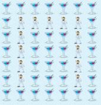

Если строка в сообщении [1] очень длинная, то Skype разбивает ее по границам слов (т.е. пробелам). Если же строка не содержит пробелов, и длина ее превышает ширину области сообщений, Skype все равно разбивает такую строку [2]. Нужно использовать строки умеренной длины. Опытным путем было выяснено, что 7 смайликов отлично помещаются и отображаются безо всяких переносов.
Если сообщение очень длинное, то Skype обрезает его до определенного количества символов, а вместо "лишних" ставит многоточие ... (по крайней мере, в версии для Linux). Возможно, в Web-приложении длина сообщения не ограничена (т.е. довольно велика) - бесконечная прокрутка нынче в моде. Опытным путем было выяснено, что в версии для Linux (при использовании букв размером 7x7 смайликов) ограничение составляет 327 строк. А вот уже 328-ая строка обрезается (оставшиеся в последней строке смайлики превращаются в простой текст, а "лишние" символы заменяются многоточием). В Web-приложении длинное сообщение вообще не отобразилось [3].
Очевидно, что ограничения могут быть разными для различных версий Skype. Кроме того, ограничения могут меняться, как говорится, без предварительного уведомления пользователя. 7x7 - достаточный размер для "смайликового" (по сути, растрового) шрифта. Хотя линии не будут плавными.
Сделаем сначала заготовку. Она будет состоять из семи строк по семь символов в каждой строке. В качестве "белого" пикселя возьмем дефис (-) [4], а в качестве "черного" воспользуемся звездочкой (*). Оставим по одному ряду "белых" пикселей сверху и снизу, чтобы при соединения букв в слово они не слипались. И не только для этого: лишний ряд окажется совсем нелишним для особенных букв, таких как Й и Ё. Вот, к примеру, буква А:
------- --***-- -*---*- -*****- -*---*- -*---*- -------
Да, с А повезло: очертания получилось сделать более-менее плавными. А вот у буквы Й вместо "шляпки" будет просто один "черный" пиксель. Букву Ж никак не получилось сделать симпатичной. А буквы Ш и Щ не получилось сделать контрастными: "хвостик", характертный для Щ - это один единственный пиксель! Как бы то ни было, алфавит можно увидеть в файле abc.txt. Или можно взять готовый шрифт. Или сгенерировать в каком угодно стиле на сайтах вроде Text to ASCII Art Generator (TAAG).
Наверное, самый простой путь - взять в качестве "цвета" фона обычный смайлик :), а в качестве "цвета" шрифта взять мишку (hug). Добавить смайлики несложно. Достаточно заменить везде в тексте - на :), а * на (hug). Эти смайлики годятся, потому что обычный смайлик - самый распространенный, а мишка хорошо подходит в качестве приветствия. Но самое главное, что цвет мишки (в основном бурый) и цвет улыбки (в основном желтый) сильно отличаются. Буква хорошо заметна. Сравните буквы П, набранные контрастными смайликами и неконтрастными смайликами. Они изображены на рисунке 1.

У клиента для Linux есть особенность (и у Windows-версии тоже, может быть): если в самом начале сообщения не поставить перевод строки (Shift + Enter), то самый первый ряд "пикселей" останется на одной строке со временем отправки сообщения. Этот нюанс хорошо виден на рисунке 2. А вот в Web-приложении все будет выглядеть хорошо, потому что время отправки сообщения отбражается поодаль справа [5].
Нужно помнить обо всех ограничениях. Иначе тщательно составленное сообщение исказится и потеряет эффектный вид. Конечно же, можно все это автоматизировать: и замену "пикселей" на смайлики, и поддержку "цветов", и собственно отправку (ну не копипастить же каждое новое слово из текстового редактора в Skype). Программу автоматизации нужно будет хорошенько отладить, проверить на нестандартных данных и т.д. А вообще, написание бота для Skype - отдельная задача. И там есть где развернуться...
__________
↑ Как известно, нажатие Enter приводит к отправке сообщения. Чтобы перейти на новую строку, нужно нажать Shitf + Enter.
↑ "Разбивает строку" означает здесь, что Skype только отображает одну длинную строку на нескольких строках. Но Skype не вставляет символ(ы) начала новой строки/возврата каретки. Т.е. если в области сообщений выделить строку и скопировать ее в буфер обмена, то она "вытянется" и примет первоначальную длину.
↑ Может это был глюк синхронизации аккаунтов? Или результат дополнительных проверок, присутствующих только в Web-версии? Непонятно...
↑ В качестве "белого" пикселя проще было бы взять пробел. Но лучше использовать дефис. Потому что он всегда хорошо виден. А пробелов можно напечатать сколько угодно, и все равно в текстовом редакторе строчка будет выглядеть пустой.
↑ В Web-приложении в самом начале сообщения нельзя втавить перевод строки вообще, т.е вставить можно, но он не отобразится. Видимо, непосредственно перед отправкой пустые строки в начале и в конце сообщения отбрасываются.